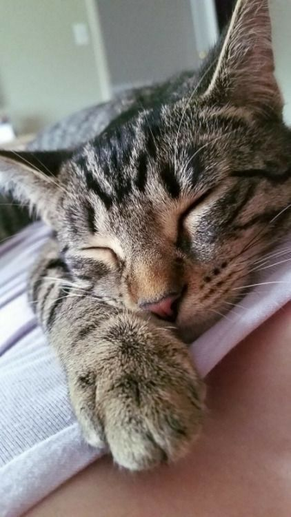
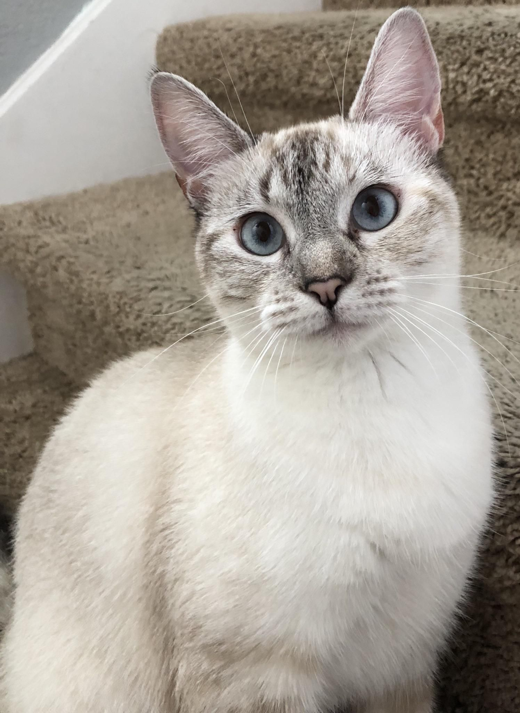
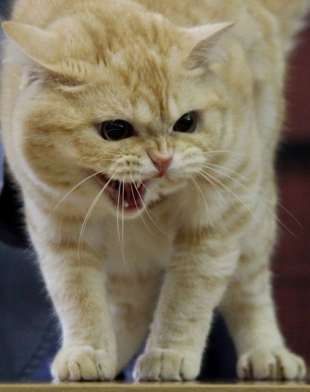
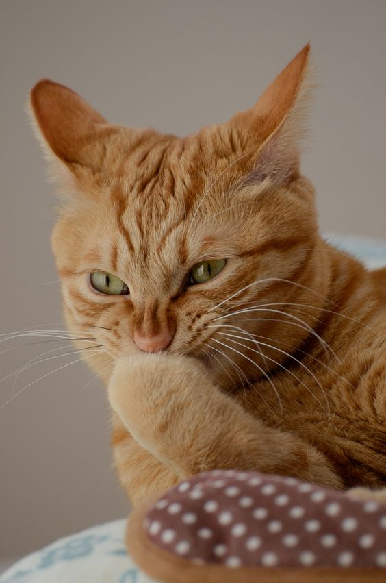
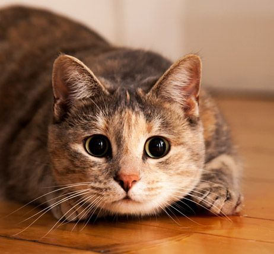
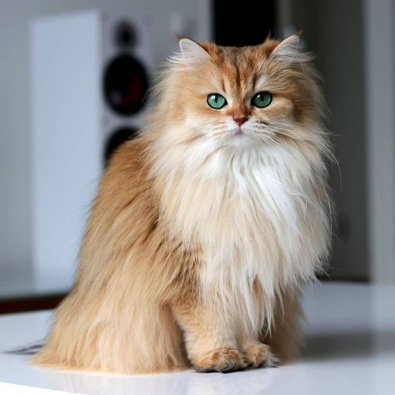
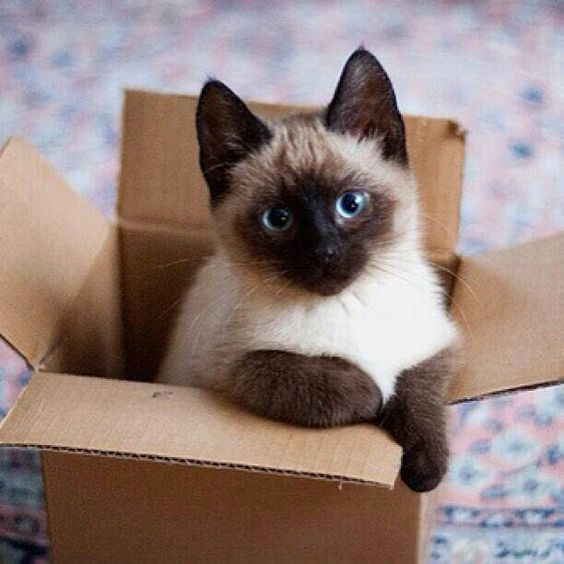
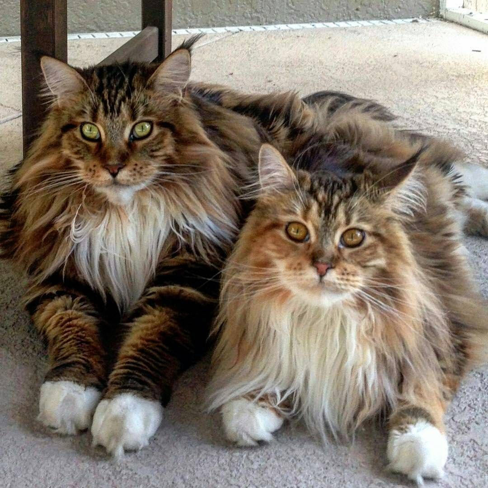
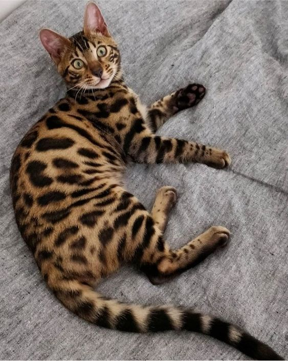
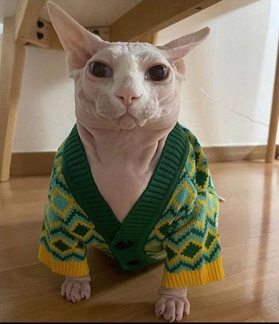

RONRONEO
El ronroneo es una de las expresiones más conocidas de los gatos. Por lo general, indica que están contentos y relajados. Sin embargo, también pueden ronronear cuando están ansiosos o enfermos, por lo que es importante prestar atención a otros signos para determinar su estado emocional.

MAULLIDOS
Los gatos emiten diferentes tipos de maullidos para comunicarse con nosotros. Pueden maullar para pedir comida, atención, mostrar frustración o incluso para saludarnos. Cada tipo de maullido puede tener un significado específico, y es importante observar el contexto y otros comportamientos del gato para comprender su mensaje.

SILBIDOS Y BUFIDOS
Cuando los gatos se sienten amenazados o asustados, pueden mostrar su desaprobación mediante silbidos y bufidos. Estas expresiones son una forma de advertencia para mantenerse alejados. Es importante respetar su espacio y permitirles retirarse a un lugar seguro si se sienten incómodos.

OREJAS Y COLA
Las orejas y la cola de un gato también pueden indicar su estado de ánimo. Si las orejas están erguidas y la cola está levantada en posición vertical, generalmente significa que están alerta y en un estado de ánimo positivo. Sin embargo, si las orejas están planas hacia atrás y la cola está ladeada o esponjada, puede indicar agresión o miedo.

MIRADA Y EXPRESION FACIAL
Los ojos de un gato pueden decir mucho sobre su estado emocional. Una mirada relajada y suave indica tranquilidad, mientras que una mirada fija y dilatada puede señalar alerta o tensión. Además, presta atención a los movimientos de los bigotes y los gestos faciales, como el levantamiento del labio superior, que pueden indicar distintas emociones.

PERSA
Conocidos por su pelaje largo y denso, los gatos persas son elegantes y tienen una expresión facial distintiva. Son gatos tranquilos, dulces y se adaptan bien a hogares tranquilos

SIAMÉS
Originarios de Tailandia, los siameses son conocidos por su distintiva apariencia con pelaje corto, cuerpo esbelto y ojos azules intensos. Son gatos vocales, inteligentes y sociales

MAINE COON
Esta raza de gatos es famosa por su tamaño grande y su pelaje denso y esponjoso. Son gatos amigables, inteligentes y se llevan bien con niños y otras mascotas

BENGALÍ
Los gatos bengalíes tienen un aspecto similar al de los leopardos debido a su patrón de pelaje moteado. Son activos, enérgicos y juguetones, y requieren estímulos mentales y físicos adecuados

SPHYNX
El gato Sphynx es una raza única conocida por su apariencia sin pelo. Aunque parezca calvo, tiene una fina capa de vello suave y lanoso. Su piel arrugada y suave les da una apariencia distintiva. Son gatos sociables, cariñosos y buscan la interacción humana. Requieren cuidados especiales debido a su piel expuesta.